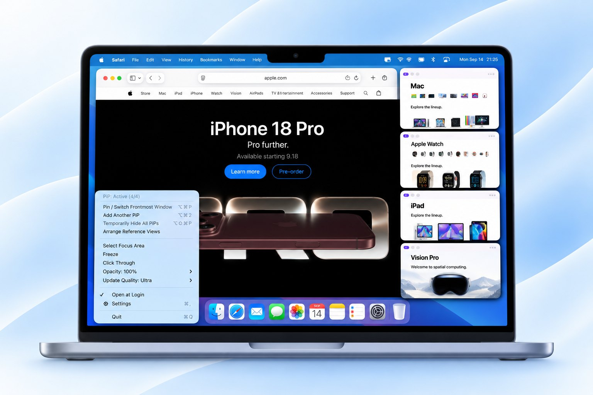
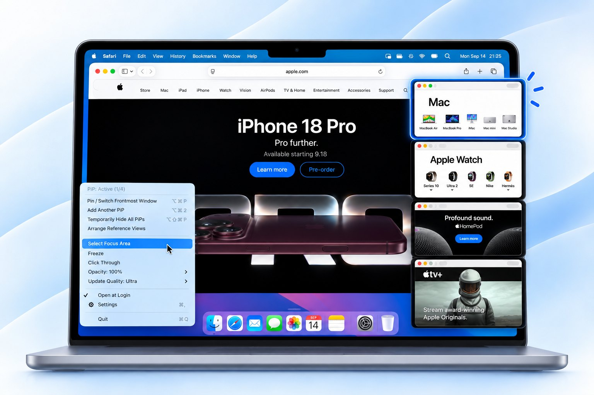
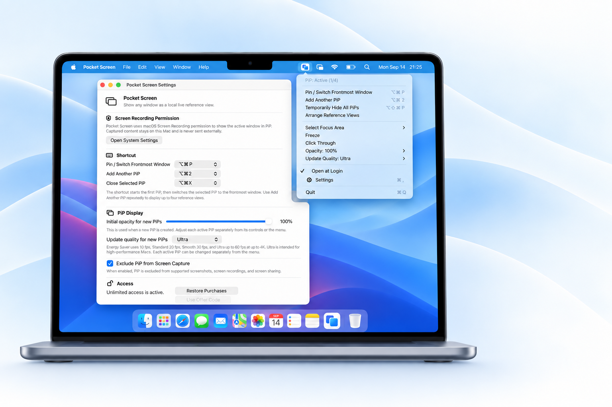

Switch back and forth
Every check requires another window switch, interrupting your focus
Turn supported Mac app windows into separate, resizable reference views above your workspace.
The original windows stay where they are.
Keep using it for freeUnlimited sessions of up to 10 minutesNo expirationNo registration

Working on one screen creates more friction than it seems
Open the reference, return to your work, lose your place, and open it again. Without an external display, this small loop happens repeatedly
Every check requires another window switch, interrupting your focus
Read the reference and keep writing without switching back and forth
Keep the same workflow wherever you work
At cafés, libraries, coworking spaces, hot-desking offices, and business-trip destinations, keep reference and work visible on one limited screen
At a café
Create emails or documents while viewing a PDF or webpage
In the office
Keep procedures or tasks visible while entering and updating information
On a business trip
Pin a timer, progress view, chat, or any window you need to monitor
Reference views
Keep several references in sight or show only the area you need, without leaving your main workspace.


Simple by design
Energy Saver, Standard, Smooth, or Ultra. Pick what fits the way you work without tuning resolution or frame rate yourself.
Start free with your everyday workflow
Use unlimited sessions of up to 10 minutes with no expiration. Start free, then choose Unlimited when it fits the way you work
Free
Keep using it with no expiration
Unlimited
or $2.99 / month
FAQ
Detailed instructions and troubleshooting are available on the Toybird Labs support page
View support →Supported Mac windows such as browsers, documents, PDFs, videos, and dashboards can be displayed as a floating window
Yes. Based on user feedback, v2.0 added support for creating multiple Reference Views from the same source window.
Yes. Pocket Screen creates a separate live view of the selected supported window. The original app window stays in place while the smaller view remains visible above your workspace.
Pinning keeps the original window above other apps. Pocket Screen instead creates a separate, resizable live view of a selected supported app window. macOS built-in Picture-in-Picture is mainly for video, while Pocket Screen can display supported browsers, documents, PDFs, dashboards, chats, videos, and other app windows.
No. The selected window is displayed locally on your Mac and is not sent to Toybird Labs servers or external AI services
Start with Free, then choose Unlimited when you need longer sessions, more references, or higher quality. The exact differences are summarized in the pricing section above
On macOS 26 or later, Pocket Screen can be excluded from supported screenshots, screen recordings, and screen sharing
Pocket Screen supports macOS 14 or later on both Apple silicon and Intel Macs